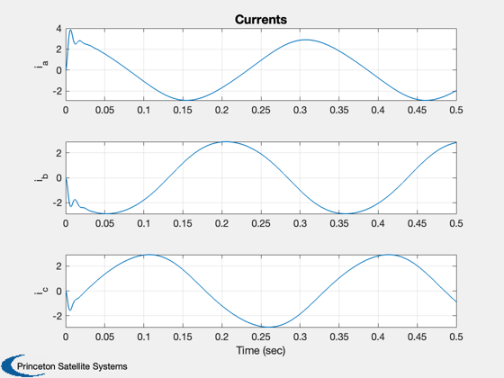
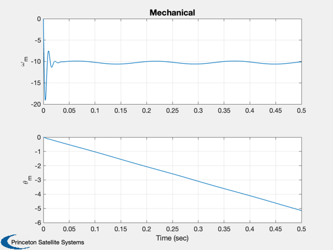
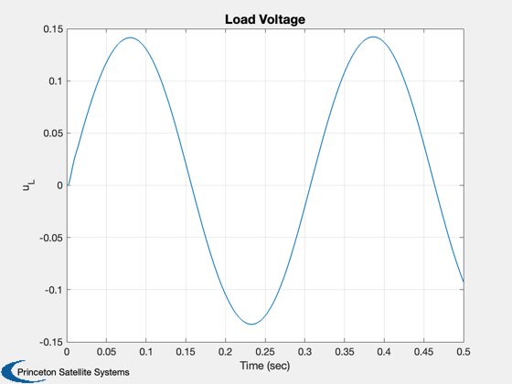

Demonstrate the ABC machine.
This simulation demonstrates speed control.
------------------------------------------------------------------------ See also Plot2D, TimeLabl, RK4 ------------------------------------------------------------------------
Contents
%-------------------------------------------------------------------------- % Copyright (c) 2009 Princeton Satellite Systems, Inc. % All rights reserved. %--------------------------------------------------------------------------
Initialize the data
nSim = 50000; dT = 0.00001; x = zeros(6,1); d.lM = 0.0009; % Mutual inductance d.psiM = 0.069; % Permanent magnet flux d.lSS = 0.001; % Stator self inductance d.rS = 0.5; % Stator resistance d.p = 2; % Number of poles (1/2 pole pairs) d.tL = 0.3; % Load torque d.bM = 0.000015; % Viscous damping (Nm/rad/s) d.j = 0.000017; % Inertia d.rL = 10; % ohm d.cL = 1; % Farad uM = 40; xP = zeros(6,nSim); dTh = [0; -2*pi/3; 2*pi/3];
Run the simulation
for k = 1:nSim thetaR = 0.5*d.p*x(5); xP(:,k) = x; d.s = 1; x = RK4( 'PMABCMachineSwitchedRHS', x, dT, 0, d ); end xP(4:5,:) = xP(4:5,:)/d.p;
Generate the time history plots
[t, tL] = TimeLabl( (0:(nSim-1))*dT );
Plot2D( t, xP(1:3,:), tL, {'i_a' 'i_b' 'i_c'}, 'Currents');
Plot2D( t, xP(4:5,:), tL, {'\omega_m' '\theta_m'}, 'Mechanical');
Plot2D( t, xP(6 ,:), tL, {'u_L' }, 'Load Voltage');
%--------------------------------------
% PSS internal file version information
%--------------------------------------
% $Id: 1dc78d9e9e0a605f6ef1b4fdcfd0dd9d8d050ca6 $
  